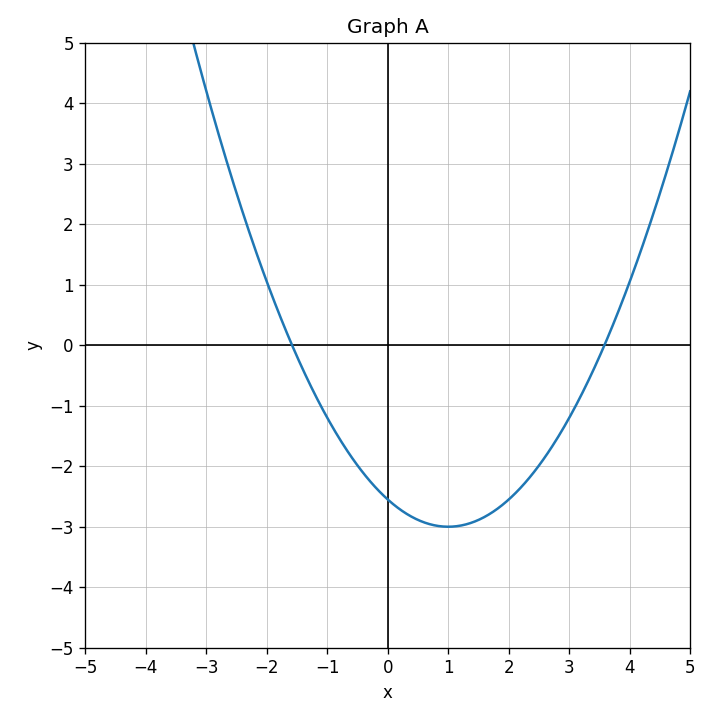
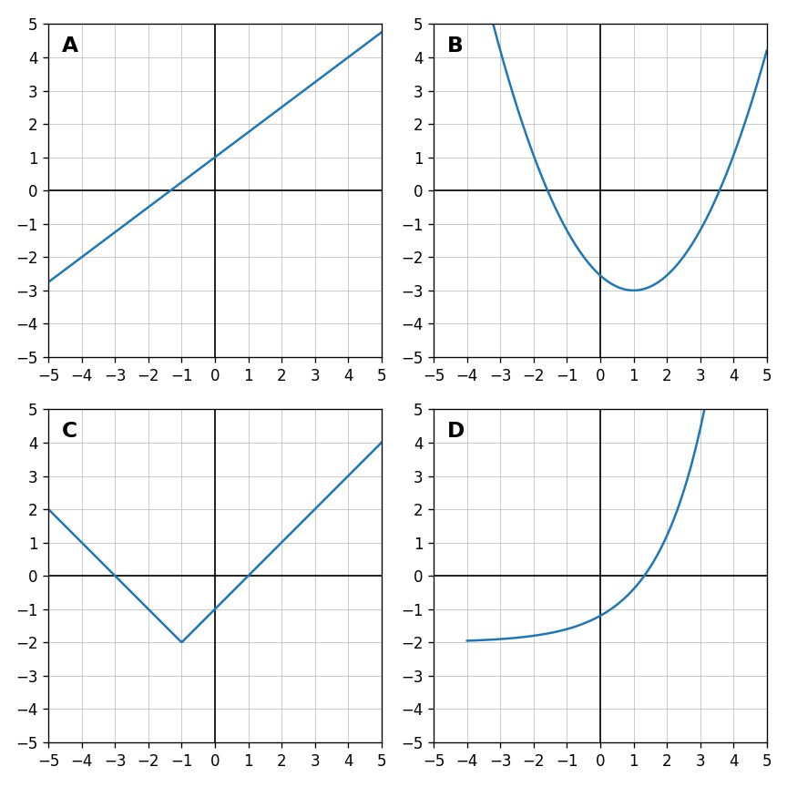

Identify the family shown in Graph B: linear, quadratic, absolute value, or exponential.

Classify each equation as linear, quadratic, absolute value, or exponential.
Use the graph set. Match each graph A-D to a function family.

Use the table to decide whether the relationship appears linear or exponential. Explain what pattern you see.
| $x$ | 0 | 1 | 2 | 3 | 4 |
|---|---|---|---|---|---|
| $y$ | 3 | 6 | 12 | 24 | 48 |
List the terms in the expression $6x+4y-9$.
Identify the coefficient of $m$ in $-7m+12$.
Combine like terms: $$8a+3a$$
Use the distributive property: $$4(x+5)$$
Simplify: $$5p+8-2p+3$$
Determine whether $3(y+4)$ and $3y+12$ are equivalent. Show one check.
A student says $2(x+7)=2x+7$. Identify the misconception and correct the expression.
Create two different expressions that are equivalent to $6x+18$. Explain how you know they are equivalent.
Determine the constant change in the sequence $4, 9, 14, 19$.
Does the sequence $2, 5, 10, 17$ appear linear? Explain briefly.
Find the rate of change from the table.
| $x$ | 0 | 1 | 2 | 3 |
|---|---|---|---|---|
| $y$ | 7 | 10 | 13 | 16 |
The first three figures of a tile pattern are shown. Determine how many tiles are added each step and predict Figure 4.